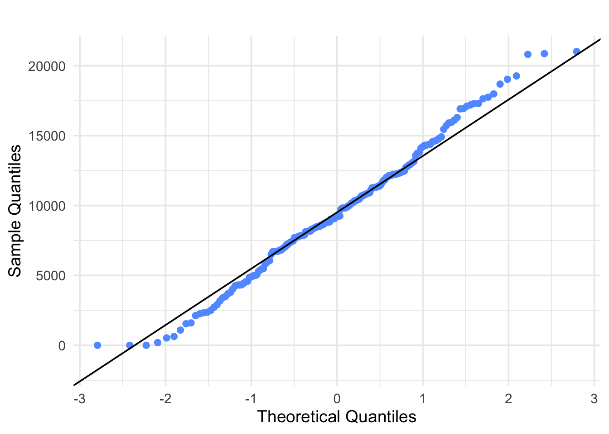
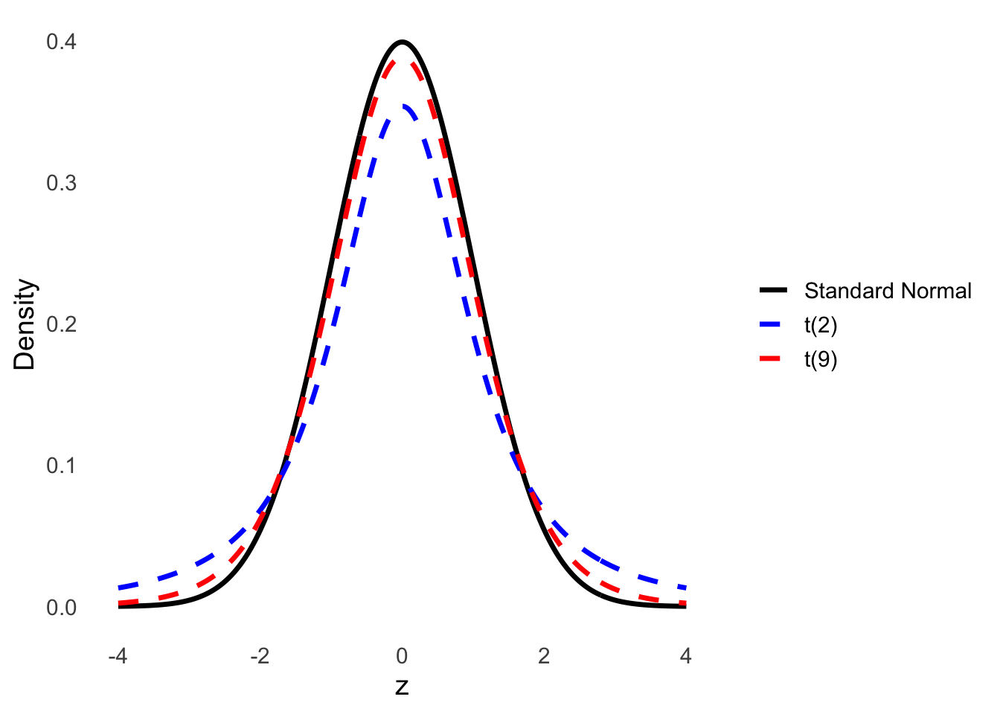
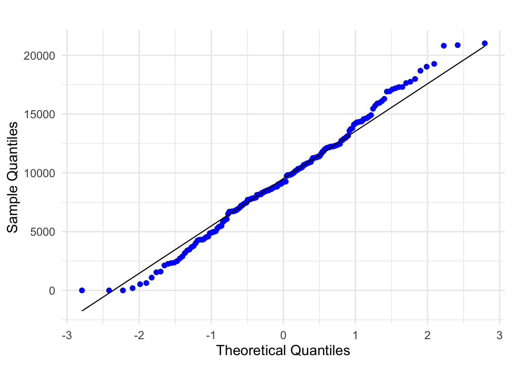
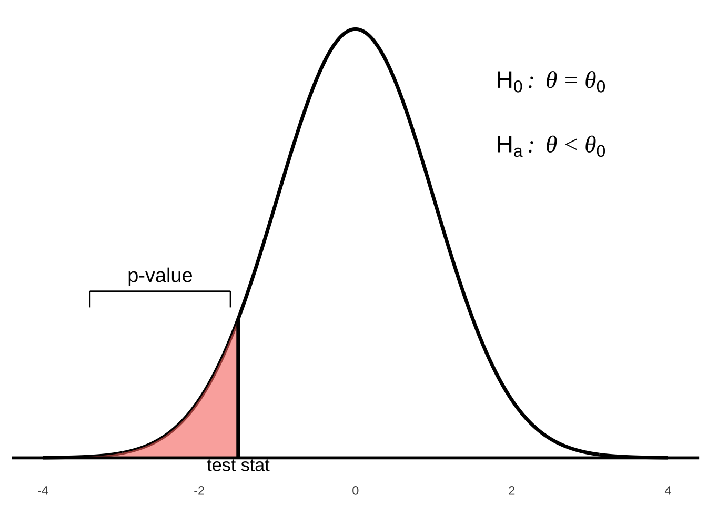
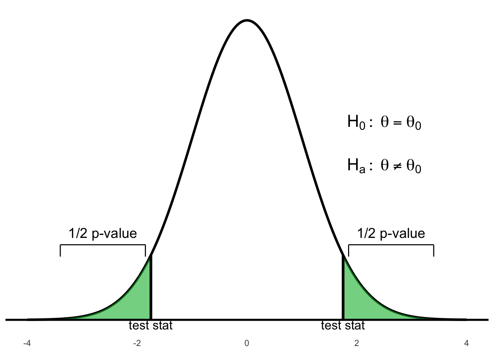

Chapter 5 Confidence Intervals
5.1 Introduction
Confidence intervals are a fundamental concept in statistics that allow us to make inferences about a population based on a sample. They provide a range of values, derived from the sample data, that is likely to contain the true population parameter with a specified level of confidence.
We will start by introducing point estimates which are used to estimate population parameters and then move on to interval estimates which utilzie point estimates to calculate them.
Definition 5.1 A point estimate is a single numerical value computed from sample data that serves as the best guess of an unknown population parameter.
Example 5.1
- \(\bar{x}\) is a point estimate of \(\mu\)
- \(s^2\) is a point estimate of \(\sigma^2\)
- \(s\) is a point estimate of \(\sigma\)
Recall in Section 4.1 where we introduced statistics inference, we discussed that we the values of statistics which are calculated and known to make conclusions on parameters which are unknown and quantify the degree of certainty of statements made.
When we calculate a statistic, it will not be exactly equal to the parameter it is estimating. For example, the sample mean \(\bar{x}\) is not exactly equal to the population mean \(\mu\). We can get an idea about the value of a parameter using an interval estimate which gives a range of real numbers around the statistic which we believe contains it.
Definition 5.2 A confidence interval is a plausible range of values that captures a parameter with a quantified degree of confidence.
In this course, all confidence intervals have the same basic skeleton:
\[\text{estimator} \pm \underbrace{ \left( \text{value from a reference distribution} \right) \times \left( \text{standard error of estimate} \right) }_{\textit{margin of error}}\]
The standard error of the estimator is the standard deviation of the the sampling distribution of the estimator.
The value from the reference distribution in the skeleton above will be either a value from the standard normal distribution the Student t-distribution, ot the chi-square distribution. The margin of error (MOE) can be considered as the distance around our estimator in which the true value of the parameter of interest will be found, with a specified level of confidence.
5.2 Interpretation
We use very specific language when we interpret a confidence interval.
Suppose we construct a \(C\%\) confidence interval for some parameter such that \(C\) is between 0 and 100. In repeated sampling, we are \(C\%\) confident that approximately \(C\%\) of the intervals will capture the true value of the parameter.
By this we mean that if we constructed several \(C\%\) confidence intervals using different samples (with or without replacing the units), then we should expect approximately \(C\%\) of these intervals to capture the parameter of interest. For example suppose we construct 1000 95% confidence intervals for the population mean \(\mu\). We would expect approximately 95% of these 1000 intervals (i.e. \(95\% \times 1000 = 950\)) to actually capture \(\mu\).
A more intuitive but equivalent interpretation is to state that we are \(C\)% confident that our target parameter is inside the interval constructed.
Remark. It is incorrect to state that there is a \(C\%\) probability that the interval we constructed contains the parameter of interest. We assume that the value of a parameter is fixed. Therefore when we construct a confidence interval, the interval either contains the parameter or it does not.
Not all confidence intervals contain the true value of the parameter. This can be illustrated by plotting many intervals simultaneously and observing.
##
## Attaching package: 'dplyr'## The following objects are masked from 'package:stats':
##
## filter, lag## The following objects are masked from 'package:base':
##
## intersect, setdiff, setequal, union
Figure 5.1: Simulated 95% confidence intervals for the population mean
5.3 One Sample Confidence Intervals
In this section, we will focus on constructing confidence intervals for one parameter.
5.3.1 On a Population Mean
5.3.1.1 When \(\sigma\) is Known
When we know the population standard deviation \(\sigma\), we can construct a confidence interval for \(\mu\) in the following manner.
A \((100 - \alpha)\%\) confidence interval on \(\mu\) when \(\sigma\) is known is given by \[\bar{x} \; \pm \; z_{\alpha/2} \left( \frac{\sigma}{\sqrt{n}} \right)\]
The \(z_{\alpha/2}\) value is obtained from standard normal tables. The
standard error is \(\frac{\sigma}{\sqrt{n}}\) and the margin of error is
\(z_{\alpha/2} \left( \frac{\sigma}{\sqrt{n}} \right)\).
The critical value \(z_{\ast}\) is illustrated in a Figure below and depends on \(C\).

Figure 5.2: The central area under the standard normal curve with confidence level \(C\)
$## Table of Common \(z\)-values {#table-of-common-z-values .unlisted .unnumbered} ::: {.centered } Confidence coefficient Confidence level \(z\) ———————— —————— ——- 0.90 90% 1.645 0.95 95% 1.96 0.99 99% 2.576 :::
Example 5.2 Playbill magazine reported that the mean annual household income of its readers is $119,155. Assume this estimate is based on a sample of 80 households, and that the population standard deviation is known to be \(\sigma = 30{,}000\).
\(\bar{x} = 119{,}155\)
\(n = 80\)
\(\sigma = 30{,}000\)
Tasks:
Develop a 90% confidence interval estimate of the population mean.
Develop a 95% confidence interval estimate of the population mean.
Develop a 99% confidence interval estimate of the population mean.
90% CI Calculation
\[\bar{x} \pm z_{\alpha/2} \cdot \frac{\sigma}{\sqrt{n}} = 119{,}155 \pm 1.645 \cdot \frac{30{,}000}{\sqrt{80}}\] \[= 119{,}155 \pm 5{,}500.73\] \[= (113{,}654.27, \; 124{,}655.73)\]
95% CI Calculation
\[\bar{x} \pm z_{\alpha/2} \cdot \frac{\sigma}{\sqrt{n}} = 119{,}155 \pm 1.96 \cdot \frac{30{,}000}{\sqrt{80}}\] \[= 119{,}155 \pm 6{,}574.04\] \[= (112{,}580.96, \; 125{,}729.04)\]
99% CI Calculation
\[\bar{x} \pm z_{\alpha/2} \cdot \frac{\sigma}{\sqrt{n}} = 119{,}155 \pm 2.576 \cdot \frac{30{,}000}{\sqrt{80}}\] \[= 119{,}155 \pm 8{,}620.04\] \[= (110{,}534.96, \; 127{,}775.04)\]
Interpretation
We are 99% confident the mean household income of magazine readers is between $110,534.96 and $127,775.04.
Example 5.3 Scenario:
The number of cars sold annually by used car salespeople is known to be normally distributed, with a population standard deviation of \(\sigma = 15\). A random sample of \(n = 15\) salespeople was taken, and the number of cars each sold is recorded below. Construct a 95% confidence interval for the population mean number of cars sold, and provide an interpretation.
Raw data:
\[\begin{matrix} 79 & 43 & 58 & 66 & 101 \\ 63 & 79 & 33 & 58 & 71 \\ 60 & 101 & 74 & 55 & 88 \\ \end{matrix}\]
The sample mean is:
\[\bar{x} = \frac{79 + 43 + \cdots + 55 + 88}{15} = 68.6\]
R function:
simple.z.test = function(x, sigma, conf.level = 0.95) {
n = length(x);
xbar = mean(x);
alpha = 1 - conf.level;
zstar = qnorm(1 - alpha/2);
SE = sigma / sqrt(n);
xbar + c(-zstar * SE, zstar * SE);
}R output:
# Step 1. Entering data;
cars = c(79, 43, 58, 66, 101, 63, 79,
33, 58, 71, 60, 101, 74, 55, 88)
# Step 2. Finding CI;
simple.z.test(cars, 15)
## [1] 61.00909 76.19091Interpretation: We estimate that the mean number of cars sold annually by all used car salespeople lies between 61 and 76, approximately. This type of estimate is correct 95% of the time.
Large samples where population is normal.
Large samples where population is not normal (By CLT).
Small samples where population is normal.
Note: A sample is considered large if \(n \geq 30\).
Example 5.4 Suppose a student measuring the boiling temperature of a certain liquid
observes the readings (in degrees Celsius) 102.5, 101.7, 103.1, 100.9,
100.5, and 102.2 on 6 different samples of the liquid. He calculates the
sample mean to be 101.82. If he knows that the distribution of boiling
points is Normal, with standard deviation 1.2 degrees, what is the
confidence interval for the population mean at a 95% confidence level?
A confidence interval uses sample data to estimate an unknown population parameter with an indication of how accurate the estimate is and of how confident we are that the result is correct.
The interval often has the form
estimate \(\pm\) margin of error
The confidence level is the success rate of the method that produces the interval. A level \(C\) confidence interval for the mean \(\mu\) of a Normal population with known standard deviation \(\sigma\), based on an SRS of size \(n\), is given by \[\bar{x} \pm z^\star \frac{\sigma}{\sqrt{n}}\]
The critical value \(z^\star\) is chosen so that the standard Normal
curve has area \(C\) between \(-z^\star\) and \(z^\star\).
Other things being equal, the margin of error of a confidence
interval gets smaller as
the confidence level \(C\) decreases,
the population standard deviation \(\sigma\) decreases, and
the sample size \(n\) increases.
5.3.1.2 When \(\sigma\) is Not known
Definition 5.3 Let \(\mu\) be the population mean. When the population standard deviation is unknown and the sample size is small, a confidence interval for \(\mu\) is given by: \[\bar{Y} \pm t_{\alpha/2} \left( \frac{S}{\sqrt{n}} \right), \quad \nu = n - 1\] This interval is valid under the following conditions:
The observations are independent and identically distributed (i.i.d).
The sample is random.
The population must follow a Normal distribution (CLT does not apply).
Independence Assumption
The data values should be independent. There’s really no way to check independence of the data by looking at the sample, but we should think about whether the assumption is reasonable.
Randomization Condition
The data arise from a random sample or suitably randomized experiment. Randomly sampled data — especially data from a Simple Random Sample — are ideal.
For very small samples (\(n < 15\) or so), the data should follow a Normal model pretty closely. If you do find outliers or strong skewness, don’t use this method.
For moderate samples (\(n\) between 15 and 40 or so), the t-method will work well as long as the data is unimodal and reasonably symmetric. Make a histogram, boxplot, or Q–Q plot to check.
When the sample size is larger than 40 or 50, the t-method is safe to use unless the data are extremely skewed. Make a histogram, boxplot, or Q–Q plot to check.
Standard Error
When the standard deviation of a statistic is estimated from data, the result is called the standard error of the statistic. The standard error of the sample mean \(\bar{x}\) is \[\frac{s}{\sqrt{n}}.\]
The density curves of the t distributions are similar in shape to the Standard Normal curve. They are symmetric about 0, single-peaked, and bell-shaped.
The spread of the t distributions is a bit greater than that of the Standard Normal distribution. The t distributions have more probability in the tails and less in the center than the Standard Normal. This is because substituting the estimate \(s\) for the fixed parameter \(\sigma\) introduces more variation into the statistic.
As the degrees of freedom increase, the t density curve approaches the \(N(0, 1)\) curve more closely. This happens because \(s\) estimates \(\sigma\) more accurately as the sample size increases. So using \(s\) in place of \(\sigma\) causes little extra variation when the sample is large.

Figure 5.3: Comparison of the standard normal distribution and t-distributions with 2 and 9 degrees of freedom
Example 5.5 The composition of the Earth’s atmosphere may have changed over time. To study the nature of the atmosphere long ago, scientists examined the gas in air bubbles trapped in ancient amber. Amber is fossilized tree resin that preserved the atmospheric gases at the time it was formed.
Measurements on amber specimens from the late Cretaceous era (75 to 95 million years ago) give the following percent values of nitrogen:
63.4, 65.0, 64.4, 63.3, 54.8, 64.5, 60.8, 49.1, 51.0
Assume these observations are a simple random sample (SRS) from the population of all ancient air bubbles. Construct a 90% confidence interval to estimate the mean percent of nitrogen in ancient air. (Today’s atmosphere contains about 78.1% nitrogen.)
Solution:
Let \(\mu\) represent the true mean percent of nitrogen in ancient air. We compute a 90% confidence interval for \(\mu\) using the sample data.
Given: \[\bar{x} = 59.5888, \quad s = 6.2552, \quad n = 9, \quad t^* = 1.860 \quad (\text{df} = 8)\]
\[59.5888 \pm 1.860 \left( \frac{6.2552}{\sqrt{9}} \right) = 59.5888 \pm 3.8782\]
\[\boxed{55.7106 \text{ to } 63.4670}\]
R code:
# Step 1: Entering the data
nitrogen <- c(63.4, 65.0, 64.4, 63.3, 54.8, 64.5, 60.8, 49.1, 51.0)
# Step 2: Constructing the 90% confidence interval
t.test(nitrogen, conf.level = 0.90)R output:
One Sample t-test
data: nitrogen
t = 28.578, df = 8, p-value = 2.43e-09
alternative hypothesis: true mean is not equal to 0
90 percent confidence interval:
55.71155 63.46622
sample estimates:
mean of x
59.58889 Example 5.6 Most owners of digital cameras store their pictures on the camera. Some will eventually download these to a computer or print them using their own printers or a commercial printer. A film-processing company wanted to know how many pictures were stored on cameras.
A random sample of 10 digital camera owners produced the following data:
25, 6, 22, 26, 31, 18, 13, 20, 14, 2
Estimate with 95% confidence the mean number of pictures stored on digital cameras.
Solution:
We are given raw data with \(n = 10\) and no information about the population standard deviation, so we construct a confidence interval for the population mean using the t-distribution.
Step 1: Compute sample statistics
Sample mean: \(\bar{x} = \dfrac{177}{10} = 17.7\)
Sample variance (method 1 – direct): \[s^2 = \dfrac{\sum (x_i - \bar{x})^2}{n - 1} = \dfrac{742}{9} = 82.4556\]
Sample standard deviation: \[s = \sqrt{82.4556} = 9.081\]
Step 2: Find the critical value
For a 95% confidence interval with \(n = 10\), degrees of freedom = 9. From the t-distribution table: \[t_{(9, 0.025)} = 2.262\]
Step 3: Construct the confidence interval
\[\bar{x} \pm t^* \cdot \dfrac{s}{\sqrt{n}} = 17.7 \pm 2.262 \cdot \dfrac{9.081}{\sqrt{10}} = 17.7 \pm 6.495\]
\[\boxed{11.205 \text{ to } 24.195}\]
Interpretation:
We are 95% confident that the mean number of images stored on digital cameras is between 11.205 and 24.195.
R code:
# Step 1: Entering data
dataset <- c(25, 6, 22, 26, 31, 18, 13, 20, 14, 2)
# Step 2: Finding 95% confidence interval
t.test(dataset, conf.level = 0.95)R output:
One Sample t-test
data: dataset
t = 6.164, df = 9, p-value = 0.0001659
alternative hypothesis: true mean is not equal to 0
95 percent confidence interval:
11.2042 24.1958
sample estimates:
mean of x
17.7 Example 5.7 A manufacturing company produces electric insulators. If the insulators break when in use, a short circuit is likely. To test the strength of the insulators, destructive testing is performed to determine how much force (in pounds) is required to break them.
The following dataset consists of force values (in pounds) recorded for a random sample of 30 insulators:
1870, 1728, 1656, 1610, 1634, 1784, 1522, 1696, 1592, 1662, 1866, 1764, 1734, 1662, 1734, 1774, 1550, 1756, 1762, 1866, 1820, 1744, 1788, 1688, 1810, 1752, 1680, 1810, 1652, 1736
Construct a 95% confidence interval for the population mean force required to break the insulators.
Solution:
We want a confidence interval for the population mean \(\mu\), where \(\mu =\) mean force required to break electric insulators. The population standard deviation is unknown, so we use a one-sample t-interval.
R code:
# Step 1. Entering data;
dataset <- c(1870, 1728, 1656, 1610, 1634, 1784, 1522, 1696, 1592, 1662,
1866, 1764, 1734, 1662, 1734, 1774, 1550, 1756, 1762, 1866,
1820, 1744, 1788, 1688, 1810, 1752, 1680, 1810, 1652, 1736)
# Step 2. Finding CI;
t.test(dataset, conf.level = 0.95)R output:
One Sample t-test
data: dataset
t = 105.41, df = 29, p-value < 2.2e-16
alternative hypothesis: true mean is not equal to 0
95 percent confidence interval:
1689.961 1756.839
sample estimates:
mean of x
1723.4 Interpretation:
We are 95% confident that the average force required to break an electric insulator is between 1689.961 pounds and 1756.839 pounds.
Example 5.8 The operations manager of a production plant would like to estimate the mean amount of time a worker takes to assemble a new electronic component. After observing 120 workers assembling similar devices, she noticed that their average time was 16.2 minutes (with a standard deviation of 3.6 minutes).
Construct a 92% confidence interval for the mean assembly time. State all necessary assumptions.
Example 5.9 In 2010, 142,823,000 tax returns were filed in the United States. The Internal Revenue Service (IRS) examined 1.107%, or 1,581,000, of them to determine if they were correctly done. To evaluate auditor performance, a random sample of these returns was drawn and the additional tax was recorded.
Estimate with 95% confidence the mean additional income tax collected
from the 1,581,000 files audited.
Solution:
We use a one-sample confidence interval for the population mean additional tax collected.
Step 1: Import the data from taxes.txt
# url of taxes;
url <- "https://mcs.utm.utoronto.ca/~nosedal/data/taxes.txt"
taxes_data <- read.table(url, header = TRUE)
# inspect structure
names(taxes_data)
head(taxes_data)
# isolate the tax values
taxes <- taxes_data$TaxesStep 2: Plot the data
Histogram:
hist(taxes,
main = "Histogram for our example",
xlab = "taxes", ylab = "frequency",
col = "blue")
Boxplot:
boxplot(taxes,
main = "Additional Income Tax",
col = "blue")
Q-Q Plot:
qqnorm(taxes, col = "blue", pch = 19)
qqline(taxes)
Step 3: Construct 95% CI
t.test(taxes, conf.level = 0.95)Interpretation: Based on the t-test, we are 95% confident that the average additional tax collected lies within the interval calculated from the sample.
Assumptions:
The sample is a random sample from the population of interest.
Observations are independent.
The population is approximately Normal, or the sample size is large enough (justified by the histogram, boxplot, and Q-Q plot).
##
## One Sample t-test
##
## data: taxes
## t = 29.345, df = 191, p-value < 2.2e-16
## alternative hypothesis: true mean is not equal to 0
## 95 percent confidence interval:
## 8886.932 10167.721
## sample estimates:
## mean of x
## 9527.326 Interpretation:
We estimate that the mean additional tax collected lies between $8,887 and $10,168 (with 95% confidence).
A few final comments
When we introduced the Student t-distribution, we pointed out that the t-statistic is Student t-distributed if the population from which we’ve sampled is Normal. However, statisticians have shown that the mathematical process that derived the Student t-distribution is robust, which means that if the population is non-Normal, the results of the confidence interval estimate are still valid provided that the population is not extremely non-Normal. Our histogram, boxplot, and Q–Q plot suggest that our variable of interest is not extremely non-Normal, and in fact, may be Normal.
5.3.2 On a Population Proportion
Previously, we have introduced two types of confidence interval based on known and unknown variance. Moreover, confidence intervals are also applied to an unknown population proportion. For example, suppose we are interested the proportion of total number of left-handed students among all students who are currently studying at University of Toronto Mississauga. The question is: how do we know such the parameter which estimates the proportion of left-handed students at UTM? While, it is impossible to proceed it directly by counting both the total number of students and all left-handed students at UTM, due to the complexity and the total workload of that task. Then, we have to work with confidence intervals.
First, we take a random sample of students at UTM, then we calculate how many students are left-handed by dividing total number of left-handed students in that sample with total number of students in it, and denote the proportion as \(\hat{p}\). Next we begin our confidence interval calculation to get a range of number with a certain level of confidence.
Now let’s begin with the proper definition of confidence interval on proportion.
Definition 5.4 We select a random sample of size \(n\) from a population with unknown
proportion \(p\) of success. An approximate confidence interval for p
is:
\[p = \hat{p} \pm z_{\frac{\alpha}{2}} \cdot \sqrt{\frac{\hat{p}(1 - \hat{p})}{n}}, \text{ where $\hat{p} = \frac{\text{number of observations satisfying the criteria}}{n}$.}\]
In addition, \(n\) is the sample size.
To apply this confidence interval, there are \(3\) conditions that we need
to guarantee:
\(1\). Random sample;
\(2\). Independent and identically distributed Bernoulli trails;
\(3\). We have a large chosen sample size (\(n\hat{p} \ge 10\) and \(n(1-\hat{p}) \ge 10\)).
A good way to understand confidence interval is visualization. Now,
suppose we have a valid estimation \(\hat{p}\). After the entire procedure
of confidence interval, our population proportion (\(p\)) should be as the
following number line shows:

Figure 5.4: Visualization of the result of confidence interval on a proportion.
Remember that your final answer of the range of \(p\) must between \(0\) and \(1\), since we are working with proportion.
Summary about One Sample Confidence Intervals
We have introduced one sample confidence interval under three different cases: given population variance, unknown population variance and unknown population proportion. All the material of one sample confidence interval comes from chapter \(6, 7, 8\), which seems like you to remember a lot. However, the reason why we give this summery is to help you to remember the basic skeleton of one sample confidence interval. Let’s revisit the three distinct types of confidence interval:
Known variance: \(\hat{x} \pm z_{\alpha/2} \cdot \frac{\sigma}{\sqrt{n}}\) (Chapter 7).
Unknown variance: \(\bar{x} \pm t_{\scriptscriptstyle{\alpha/2}} \cdot \frac{s}{\sqrt{n}}\)
Proportion: \(\hat{p} \pm z_{\scriptscriptstyle{\alpha/2}} \cdot \sqrt{\frac{\hat{p}(1-\hat{p})}{n}}\)
The question is: what is the similarity between the three distinct types
of confidence interval? You may have already noticed that the confidence
intervals above are all follow such a skeleton that \(\bar{x}\) plus or
minus its margin of error (different between each type of C.I.).
If we keep questioning ourselves that how the margin of error comes
from, you will catch the pattern. The margin of error contains reference
distribution and the standard deviation of \(\bar{x}\) under its reference
distribution. Let’s analyze each type of confidence interval to prove my
statement is true:
The first type (given population variance) confidence interval is quite
easy to recognize. Recall chapter \(3\): The Central Limit Theorem, we
state that \(\bar{x} \sim N(\mu, \frac{\sigma^2}{n})\), which is how
reference distribution comes from with given population variance. To get
the standard deviation of \(\bar{x}\), we simply take the square root of
the variance, then \(s_{\bar{x}} = \frac{\sigma}{\sqrt{n}}\). Finally, we
multiply reference distribution at the point \(\frac{\alpha}{2}\) with the
standard deviation of \(\bar{x}\) under normal distribution to get the
margin of error.
The second type (unknown population variance) confidence interval is
similar to the first type, but the reference distribution is
t-distribution instead of normal distribution. In chapter \(7\), we
introduced the calculation of sample variance (\(s^2\)) to estimate
population variance (\(\sigma^2\)), and \(s^2\) is an unbiased estimator of
\(\sigma^2\) (the proof of this statement is in STA260, in this course we
can assume it freely). In chapter \(2\), we defined that
\(T = \frac{\bar{x} - \mu}{(\frac{s}{\sqrt{n}})} \sim t_{n-1},\) then the
term \(\frac{s}{\sqrt{n}}\) (verify this by yourself as an extra exercise)
is the standard deviation of \(\bar{x}\) under t-distribution with \(n-1\)
degrees of freedom. Finally, we multiply multiply reference distribution
at the point \(\frac{\alpha}{2}\) with the standard deviation of \(\bar{x}\)
under t-distribution to get the margin of error.
The third type (estimate population proportion) confidence interval is
slightly harder to identify. Recall chapter \(4\) that we can approximate
binomial distribution by normal distribution. Suppose that a random
variable \(X \sim Binomial(n,p)\), then the random variable
\(X \sim N(np, np(1-p)).\) From chapter \(4\), we know that
\(\hat{p} \sim N(\mu_{\hat{p}} = p, \sigma_{\hat{p}}^{2} = \frac{p(1-p)}{n})\).
Trivially, the standard deviation of \(\hat{p}\) is
\(\sqrt{\frac{p(1-p)}{n}}\), since we don’t know the value \(p\) and use
\(\hat{p}\) to estimate that. Then, standard deviation of \(\hat{p}\) is
\(\sqrt{\frac{\hat{p}(1-\hat{p})}{n}}\). Finally, by multiplying the
reference distribution and standard deviation, we get the margin of
error of the confidence interval.
Conclusion About One Sample Confidence Intervals
If you follow the skeleton below, one sample confidence interval will become easier:
1. Identify what type of one sample confidence interval to use from given information;
2. Construct your confidence interval that fits the circumstance which you are facing, it either going to be \(\bar{x} \pm M.E.(\bar{x})\text{ or } \hat{p} \pm M.E.(\hat{p});\)
3. Check the validity of your final answer. For example, the range of \(p\) must between \(0\) and \(1\).
4. Clearly state your final conclusion: we have a certain percentage of confidence to guarantee that the value of the chosen sample is between its lower bound and upper bound.
5.4 Two Sample Confidence Intervals
We have discussed three distinct types of one sample confidence interval. Now, let’s keep moving forward to see how confidence interval works for two sample. The aim of one sample confidence interval is giving a range of numbers to estimate population mean or proportion with a certain percentage of confidence. For two samples, the aim is comparing with sample has a relatively larger or smaller population mean or proportion with a certain percentage of confidence.
5.4.1 On a Difference of Means
Suppose we are interested in the final mark of MAT135 from the same semester but with different campuses at the University of Toronto (let’s use UTSG and UTM as the two independent population groups). We want to know which campus has a relatively higher average score, the question is: how do we determine that? It is going to be complicated if we proceed with the study directly by determining the sum of everyone’s final marks and calculating the average for the two campuses. Similarly, as one sample confidence interval, we can select two groups of random sample from the two campuses (one group per each campus), and then calculate each sample mean. Finally, we apply a confidence interval to approximate which population has a higher mean (or average).
Similar to one-sample confidence intervals on a mean, we examine various cases of two-sample confidence intervals on a difference means.
5.4.1.1 When \(\sigma_1\) and \(\sigma_2\) are Known
Definition 5.5 Suppose we are given the population variance for both two independent groups of population. The confidence interval of \(\mu_1 - \mu_2\) (difference of mean between population group 1 and 2) is given by the following: \[(\bar{x}_{1} - \bar{x}_{2}) \pm z_{\small\alpha/2} \cdot \sqrt{ \frac{\sigma_1^2}{n_1} + \frac{\sigma_2^2}{n_2}}.\] For \(\sigma_1^2\), which is population variance of population group 1; \(n_1\) is the sample size chosen form population group 1. Similarly for \(\sigma_2^2\), which is population variance of population group 2; \(n_2\) is the sample size chosen form population group 2.
This situation is a bit unrealistic with other cases because the population variance (\(\sigma^2\)) from both groups are rare to know.
5.4.1.2 When \(\sigma_1\) and \(\sigma_2\) are Not Known
In practice, we usually do not have the information about population variance. The situations in this section are a lot more realistic. In the case when the variances of both populations are unknown, we consider two subcases.
5.4.1.3 When \(\sigma_1 = \sigma_2\)
We first examine the case where we assume the standard deviation of both populations is assumed equal.
Definition 5.6 Suppose that the chosen two independent samples have same unknown
population variance. Then the two sample confidence interval for
\(\mu_1 - \mu_2\) is given by the following:
\[(\bar{x}_1 - \bar{x}_2) \pm t_{n_1+n_2-2; \alpha/2} \cdot s_p \cdot \sqrt{\frac{1}{n_1} + \frac{1}{n_2}}.\]
In this case, \(n_1\) and \(n_2\) are sample size from the two chosen
samples respectively; \(s_p\) is aggregated variance of both samples
combined which accommodates samples of different sizes. Additionally,
\(s_p\) is called pooled standard deviation which is calculated by the
following equation:
\[s_p^2 = \frac{(n_1-1) \cdot s_1^2 + (n_2-1) \cdot s_2^2 }{n_1+n_2-2},\]
where \(s_1^2\) and \(s_2^2\) are sample variance of the two chosen samples
respectively.
Then we take the square root \(s_p = \sqrt{s_p^2}\) to get pooled standard
deviation.
Alternatively, we can write the equation for two sample confidence interval with equal unknown variance as: \[(\bar{x}_1 - \bar{x}_2) \pm t_{n_1+n_2-2; \alpha/2} \cdot \sqrt{s_p^2(\frac{1}{n_1} + \frac{1}{n_2})}, \text{ which is same as the one above.}\]
The pooled variance (also known as combined variance, composite variance, or overall variance) is a method to calculate such a value in order to estimate variance between several distinct populations. The mean of each population may or may not be the same, but the variance of these populations are same. Pooled standard deviation does similar thing, we use that value to estimate standard deviation instead of variance.
5.4.1.4 When \(\sigma_1 \neq \sigma_2\)
We now examine the case where we assume the standard deviation of both populations is assumed different.
Definition 5.7 Suppose that our chosen two independent samples with unequal and unknown population variance, then the confidence interval for \(\mu_1 - \mu_2\) is given by: \[(\bar{x}_1 - \bar{x}_2) \pm t_{df; \alpha/2} \cdot \sqrt{\frac{s_1^2}{n_1} + \frac{s_2^2}{n_2}}, \text{ where: $df = min(n_1-1, n_2-1)$.}\] Moreover, \(s_1^2\) and \(s_2^2\) are sample variance of the two chosen groups; and \(n_1\), \(n_2\) are the sample size of the two chosen groups respectively.
5.4.1.5 Assumptions
Same as all previous confidence intervals, we still need several conditions that guarantee the validity two sample confidence interval:
1. The two chosen sample is required to be independent and random;
2. If both sample size are small (both \(n_1 < 30\) and \(n_2 < 30\)), then both sample should be from normal population;
3. If one of the sample has a small size (either \(n_1 < 30\) or \(n_2 < 30\)), then the smaller sample must be from a normal population;
Note that if both \(n_1 \ge 30\) and \(n_2 \ge 30\), then normality
assumption is not required by the Central Limit Theorem.
Example (Comparing Two Population Means Managerial Success Indexes for
Two Groups)
5.4.2 On a Difference of Proportions
Furthermore, two sample confidence intervals can approximate the proportion as well. Suppose we are interested in the proportion of left-handed students in UTSG and UTM, and we are asked to find the campus that has a relatively larger proportion of left-handed students. To begin with this task, it is impossible to complete it directly by calculation, due to its complexity and high workload. We can use select two independent groups (one group from each campus), then apply two sample confidence interval to approximate which campus has a larger proportion.
Definition 5.8 Draw an SRS of size \(n_1\) from a population having proportion \(p_1\) of successes and draw an independent SRS of size \(n_2\) from another population having proportion \(p_2\) of successes. When \(n_1\) and \(n_2\) are large, an approximate level C confidence interval for \(p_1 - p_2\) is given by: \[(\hat{p}_1 - \hat{p}_2) \pm z_{\alpha/2} \cdot \sqrt{ \frac{\hat{p}_1(1-\hat{p}_1)}{n_1} + \frac{\hat{p}_2(1-\hat{p}_2)}{n_2}}.\] Now, \(n_1\) and \(n_2\) are sample size of selected random sample from each population; \(\hat{p}_1\) and \(\hat{p}_2\) are the proportion of success of each selected random sample respectively.
5.4.2.1 Assumptions
1. Randomization Condition: The data in each group should be drawn independently and at random from a population or generated b y a completely randomized designed experiment.
2. The \(10\%\) Condition: If the data are sampled without replacement, the sample should not exceed \(10\%\) of the population. If samples are bigger than \(10\%\) of the target population, random draws are no longer approximately independent.
3. Independent Groups Assumption: The two groups we are comparing must be independent from each other.
4. Sample size requirement: both selected sample size must greater than \(70\).
5.4.3 On a Ratio of Variances
Confidence interval is a strong technique in inferential statistics, we
have discussed its application on population mean, proportion and
dependent data. Now, let’s move on to variance.
One simple method involves just looking at two sample variances.
Logically, if two population variances are equal, then the two sample
variances should be very similar. When the two sample variances are
reasonably close, you can be reasonably confident that the homogeneity
assumption is satisfied and proceed with, for example, Student
t-interval. However, when one sample variance is three or four times
larger than the other, then there is reason for a concern. The common
statistical procedure for comparing population variances \(\sigma_1^2\)
and \(\sigma_2^2\) makes an inference about the ratio of
\((\sigma_1^2)/(\sigma_2^2)\).
To make an inference about the ratio of \((\sigma_1^2)/(\sigma_2^2)\) we
collect sample data and use the ratio of the sample variances
\((\sigma_1^2)/(\sigma_2^2)\).
At this point, let’s derive the confidence interval. We know that: \(\frac{s_1^2/\sigma_1^2}{s_2^2/\sigma_2^2} \sim F_{n_1-1, n_2 -1}\). Then, we can construct our confidence interval as: \[P[F_{n_1-1, n_2 -1; 1-\alpha/2} < \frac{s_1^2/\sigma_1^2}{s_2^2/\sigma_2^2} < F_{n_1-1, n_2 -1; \alpha/2}] = 1 -\alpha.\] Now, the reference distribution of this confidence interval is F-distribution with \(n_1 - 1\) and \(n_2 -1\) degrees of freedom, leaving areas of \(1 - \alpha/2\) and \(\alpha/2\), respectively, to the right. Rearranging gives us: \[P[\frac{s_1^2}{s_2^2} \cdot \frac{1}{F_{n_1-1, n_2 -1; \alpha/2}} < \frac{\sigma_1^2}{\sigma_2^2} < \frac{s_1^2}{s_2^2} \cdot \frac{1}{F_{n_1-1, n_2 -1; 1-\alpha/2}}] = 1 -\alpha.\] Using the face that \(F_{n_1-1,n_2-1; 1 - \alpha/2} = \frac{1}{F_{n_2-1,n_1-1; \alpha/2}}\), we have: \[P[\frac{s_1^2}{s_2^2} \cdot \frac{1}{F_{n_1-1, n_2-1, \alpha/2}} < \frac{\sigma_1^2}{\sigma_2^2} < \frac{s_1^2}{s_2^2} \cdot F_{n_2-1, n_1 - 1, \alpha/2}] = 1- \alpha.\]
5.5 Confidence Intervals on Paired Data
It may appear that two sample confidence interval only works on two independent samples, however what about two dependent samples? Suppose we are interested the growth of height from several distinct elementary students. We measure their height recently, then we will do it another time with five years later. The question is: how are we going to proceed with two confidence interval? While, the answer is yes. We are able to do so by constructing two sample confidence interval, but with a different strategy.
We may have situations
| Sample Units | Measurement 1 (\(M_{1}\)) | Measurement 2 (\(M_{2}\)) | Difference (\(M_{2}-M_{1}\)) |
|---|---|---|---|
| 1 | \(x_{11}\) | \(x_{12}\) | \(x_{d1} = x_{12} - x_{11}\) |
| 2 | \(x_{21}\) | \(x_{22}\) | \(x_{d2} = x_{22} - x_{21}\) |
| 3 | \(x_{31}\) | \(x_{32}\) | \(x_{d3} = x_{32} - x_{31}\) |
| \(\vdots\) | \(\vdots\) | \(\vdots\) | \(\vdots\) |
| n | \(x_{n1}\) | \(x_{n2}\) | \(x_{dn} = x_{n2} - x_{n1}\) |
The table shows how calculate paired data. In each row, Measurement 1is a measurement on a sample unit and the Measurement 2 is a measurement on the same unit. We then calculate the difference between the two measurements for each of the measurements for each unit as shown in the last column, difference between the second and the first measurement (\(M_2 - M_1\)).
Remark. In the table above, we calculated differences as \(M_{2} - M_{1}\), however it is also possible to calculate \(M_{2} - M_{1}\). The final results and interpretation will be the same, however one order in which measurements are subtracted may be more convenient than the other.
To calculate the confidence interval on paired data, we first need to calculate the mean and sample variance of the difference data using:
\[\bar{x}_{d} = \displaystyle\frac{\displaystyle\sum_{i=1}^{m} x_{di}}{n}, \quad\quad s_{d} = \displaystyle\frac{\displaystyle\sum_{i=1}^{m} (x_{di} - \bar{x}_{d} )^2}{n-1}.\]
Then we can use the fourth column to get the mean value, sample variance and sample standard deviation of the difference. Now, let’s begin with the proper definition:
Definition 5.9 Suppose we have two samples that are dependent with each other, the confidence interval on paired data’s mean (\(\mu_d\)) is given by: \[\bar{x}_d \pm t_{n-1, \alpha/2} \cdot \frac{s_d}{\sqrt{n}}.\] In this case, the reference distribution is t-distribution with \(n-1\) degrees of freedom (sample size minus \(1\)), \(\bar{x}_d\) represents the sample mean of difference between the two measurements on the paired data, \(s_d\) is the sample standard deviation of difference between the two measurements.
5.6 Sample Size Selection using Confidence Intervals
In this section we will examine techniques to calculate the minimum sample size required to obtain a confidence interval to be within a specified margin of error.
5.6.1 Calculating Sample Size for a Confidence Interval on a Mean
We will examine how to calculate the minimum sample size \(n\) for a confidence interval on a mean for a margin of error \(E\) at confidence level \(1-\alpha\).
When \(\sigma\) is Known
For a desired margin of error \(E\) and confidence level \(1-\alpha\): \[E = z_{\alpha/2}\,\frac{\sigma}{\sqrt{n}}\]
We can rearrange \(E\) to calculate the sample size using
\[n = \left( \frac{z_{\alpha/2}\,\sigma}{E} \right)^2\] where \(n\) is
always rounded up to the next integer.
Example 5.10 A manufacturer of pharmaceutical products analyzes a specimen from each
batch of a product to verify the concentration of the active ingredient.
The chemical analysis is not perfectly precise. Repeated measurements on
the same specimen give slightly different results. Suppose we know that
the results of repeated measurements follow a Normal distribution with
mean \(\mu\) equal to the true concentration and standard deviation
\(\sigma = 0.0068\) grams per liter. (That the mean of the population of
all measurements is the true concentration says that the measurements
process has no bias. The standard deviation describes the precision of
the measurement.) The laboratory analyzes each specimen \(n\) times and
reports the mean result.
Management asks the laboratory to produce results accurate to within
\(\pm 0.005\) with 95% confidence. How many measurements must be averaged
to comply with this request?
\[n = \left( \displaystyle \frac{z_{0.025}\,\sigma}{E} \right)^2 = \Bigl(\frac{1.96 \times 0.0068}{0.005}\Bigr)^2 \approx 7.1\] Since the sample size should be a whole number, we round our result up to \(n=8\) measurements.
In Example 5.10, we note that 7 measurements will give a slightly larger margin of error than desired, and 8 measurements a slightly smaller margin of error, the lab must take 8 measurements on each specimen to meet management’s demand. Always round up to the next higher whole number when finding \(n\).
Example 5.11 Planning value \(\sigma=22.50\), desired margin \(E=2\).
90% confidence, \(z_{0.05}=1.65\): \[n = \Bigl(\frac{1.65 \times 22.50}{2}\Bigr)^2 \approx 344.6 \quad\Longrightarrow\quad n = 345.\]
95% confidence, \(z_{0.025}=1.96\): \[n = \Bigl(\frac{1.96 \times 22.50}{2}\Bigr)^2 \approx 486.2 \quad\Longrightarrow\quad n = 487.\]
99% confidence, \(z_{0.005}=2.58\): \[n = \Bigl(\frac{2.58 \times 22.50}{2}\Bigr)^2 \approx 842.5 \quad\Longrightarrow\quad n = 843.\]
5.6.2 Calculating Sample Size for a Confidence Interval on a Proportion
We will examine how to calculate the minimum sample size \(n\) for a confidence interval on a proportion for a margin of error \(E\) at confidence level \(1-\alpha\). For sample of size \(n\) with unknown population proportion \(p\): \[\hat p \pm z^* \sqrt{ \displaystyle \frac{\hat p(1-\hat p)}{n}}.\] where the margin of error is \[E=z^*\sqrt{ \displaystyle \frac{p^*(1-p^*)}{n}}\] we can rearrange \(E\) to calculate the sample size using \[n = \left( \displaystyle \frac{z^*}{E} \right)^2\,p^*(1-p^*),\] where \(p^*\) can be a planning value, which is value obtained from prior information such as a pilot study. If we do not have any prior information on \(p^*\), we can use \(p^* = 0.5\) which is the conservative value that maximizes the product \(p^*(1-p^*)\).
Example 5.12 Aisha Shariff and Yvette Ye are the candidates for mayor in a large
city. You are planning a sample survey to determine what percent of the
voters plan to vote for Shariff. This is a population proportion \(p\).
You will contact an SRS of registered voters in the city. You want to
estimate \(p\) with 95% confidence and a margin of error no greater than
3%, or 0.03. How large a sample do you need?
For a 95% CI on \(p\): \(z_{0.025} = 1.96\). Margin of error = 0.03. Since
no information on a good estimate of \(p\), use \(p^{*} = 0.5\).
\[1.96 \sqrt{\frac{(0.5)(1 - 0.5)}{n}} \le 0.03 \quad\Longrightarrow\quad n = \left(\frac{1.96}{0.03}\right)^{2} (0.5)(0.5) \approx 1067.1.\] Round up: \[n = 1068.\]
Example 5.13 The percentage of people not covered by health care insurance in 2007 in the USA was 15.6%. A congressional committee has been charged with conducting a sample survey to obtain more current information.
What sample size would you recommend if the committee’s goal is to estimate the current proportion of individuals without health care insurance with a margin of error of 0.03? Use a 95% confidence level.
Repeat part (a) using a 99% confidence level.
\[\text{(a) } n = \left(\frac{z^{*}}{E}\right)^{2} p^{*}(1-p^{*}), \quad z^{*} = 1.96, \; E = 0.03,\; p^{*} = 0.156.\] \[n = \left(\frac{1.96}{0.03}\right)^{2} (0.156)(1 - 0.156) \approx 563.\]
\[\text{(b) } n = \left(\frac{2.58}{0.03}\right)^{2} (0.156)(1 - 0.156) \approx 974.\]
Example 5.14 A consumer advocacy group would like to find the proportion of consumers who bought the newest generation of iPhone and were happy with their purchase. How large a sample should they take to estimate \(p\) with 2% margin of error and 90% confidence?
Parameters: \[\begin{aligned} E &= 0.02, \quad\text{(margin of error)}\\ \text{Confidence level} &= 0.90 \;\Longrightarrow\; \alpha = 0.10,\;\alpha/2 = 0.05,\\ z^{*} &= z_{0.05} = 1.645,\\ p^{*} &= 0.5,\quad p^{*}(1 - p^{*}) = 0.5 \times 0.5 = 0.25. \end{aligned}\]
Sample‐Size Formula: \[n \;=\; \left(\frac{z^{*}}{E}\right)^{2}\;p^{*}(1 - p^{*}).\]
Substituting \(z^{*} = 1.645\), \(E = 0.02\), and \(p^{*}(1 - p^{*}) = 0.25\): \[\begin{aligned} n &= \left(\frac{1.645}{0.02}\right)^{2} \times 0.25 = \bigl(82.25\bigr)^{2} \times 0.25 = 6{,}764.0625 \times 0.25 \\[0.5em] &= 1{,}691.015625. \end{aligned}\]
Since \(n\) must be a whole number and we always round up to ensure the margin of error is at most \(2\%\), we take \[n = 1{,}692.\]